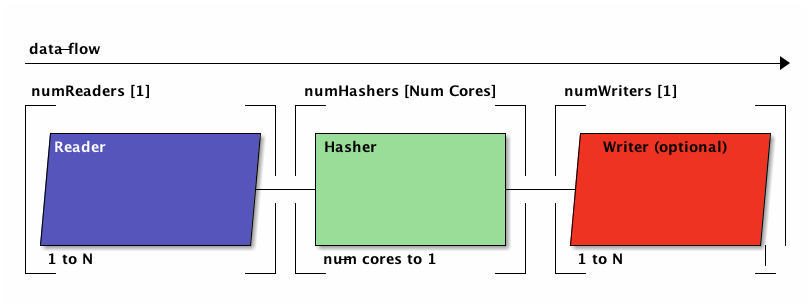

This page explains all sub-commands and how to use them.
When it's your intend to transfer large amounts of data in high-speed and in a sealed (and possibly verified) fashion, sealed-copy is the sub-command for you.
Otherwise, you can seal existing folders, and verify them at another time to assure the data is still what it is supposed to be. Please note that filesystems like ZFS have this kind of feature built-in - godi just allows you to assert your data's integrity on any storage system.

Subcommands
Seal
Verify
Sealed Copy
Increasing Performance
For understanding this paragraph, it's beneficial to understand how data is processed in godi. Without getting into too much detail, you can see that data is first read from storage, then hashed, and possibly be written in any of the copy-enabled modes.

As the Hasher part can easily deliver 450MB/s per core, you can imagine that the bottleneck will occour during disk-based input-output operations. For example, reading from an SSD with a cold filesystem cache will rarely deliver more than 500MB/s, and writing to an SSD would not be much faster either.
Nonetheless, depending on the type of storage, you might benefit from multiple simultaneous reads, and/or multiple simultaneous writes, which may drastically increase the perceived performance.
It is vital to test for good values for --num-readers and --num-writers to get optimal performance for your respective hardware. By default, there may be as many hashers as you have cores, and this rarely needs a change unless godi is competing with other programs for the CPU.
Performance Example
- TODO
- show how various settings are affecting each other, especially on a hot cache or through a network.